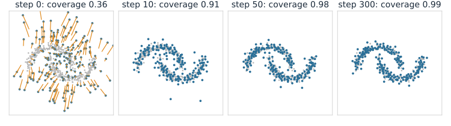
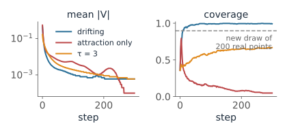
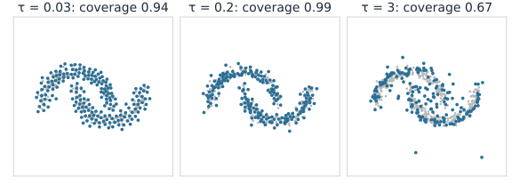
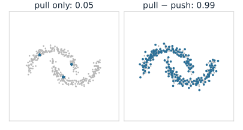
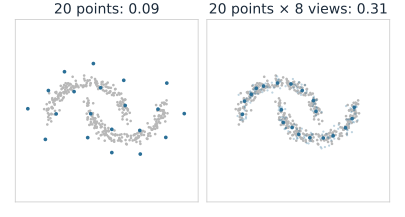
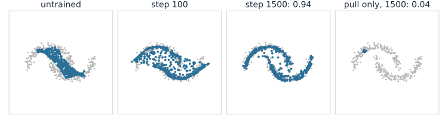

Diffusion needs tens of network passes per image. Can the iteration move into training, so that one pass makes an image?
Particles first: every generated point is pulled towards nearby real points and pushed away from nearby generated points. The difference is the drifting fieldV; it vanishes when the two clouds agree.
The points can be the result: a handful of synthetic images that cover a data set (dataset distillation), judged by coverage.
Or a network makes them: trained so that its outputs follow V, it then generates in one pass.
How this relates to mean shift, GANs, diffusion and kernel distances, and what it does not guarantee.
A recent idea (2026), taught as an idea: neither paper shows microscopy.
Slides titled The math give the formulas and proofs; the ideas are complete without them.
A diffusion model learns one easy thing, denoising, and pays at sampling time: tens of steps, each a network pass.
Drifting: do the iterating during training, by moving the generated samples a little at every training step; keep a one-pass generator.

The pull and the push
Look at one generated point \mathbf x.
PullV^+: from \mathbf x to the weighted mean of the real points near it. Near points weigh most: weight e^{-\text{distance}/\tau}, normalised to sum to 1.
PushV^-: the same towards the other generated points, with the sign flipped.
DriftV = V^+ - V^-. Because both weights sum to 1, this is simply (local mean of the real points) − (local mean of the generated points).
Where the generated points are too dense, the push wins; where they are missing, the pull wins. Where the two clouds agree locally, the two means coincide and V = 0.
One drifting step for free points: \mathbf x_i \leftarrow \mathbf x_i + \eta\,V(\mathbf x_i), all points at once.
Try it: points drift onto the data
When does the drift stop?
From noise, the mean |V| falls from 0.45 to 0.001 in 300 steps; coverage (next slides) rises from 0.36 to 0.99.
Start on a new draw of the data: |V| is 0.034 from the first step, 13 times smaller than from noise. The field barely moves a cloud that already matches.
Not exactly zero: a point is not its own negative, so close neighbours push each other apart. Drifted points end up more evenly spread than a random draw: coverage 0.99 against 0.90 for 200 fresh real points.
Pull only (red): |V| also goes to 0, but every point has collapsed onto a few spots.

The math: zero drift, and what it does not prove
Anti-symmetry: swapping the roles of p and q swaps V^+ and V^-, so V_{p,q}(\mathbf x) = -V_{q,p}(\mathbf x). If q = p, then V = -V, so V = 0 everywhere.
The converse is false in general (the paper’s own caveat: “it remains unclear under what conditions V \to 0 leads to q \to p”). Training only sees Vat the generated samples:
p = points on a ring (symmetric about 0), q = all mass at the centre. V^+(\mathbf 0) = 0 by symmetry and there are no other generated points to push: V = 0 on all of q, yet q \neq p. (An unstable rest point: any jitter breaks it.)
In 1D with modes at -1.5 (3/4 of the data) and +1.5 (1/4), a generator whose samples all sit in the left mode feels almost no field when \tau is small: the right mode is e^{-3/\tau} away. In the coding exercise, a generator trained at \tau = 0.2 ends with 14 % of its samples in the right mode instead of 25 %.
The paper gives conditions (full support, a linear-independence assumption) under which zero drift forces q = p.
The temperature τ

Small\tau: each point feels only its nearest neighbours. Fine local detail, but slow, and blind to anything far away (a missing mode).
Large\tau: every point sees everything with almost equal weight; the field matches averages and leaves the shape blurred (coverage 0.67).
The image paper sums the losses of several temperatures (0.02, 0.05 and 0.2, on normalised features).
Pull only is mean shift
Without the push, every point climbs to the nearest peak of the density of the real points: exactly mean shift (mixtures on images).
That is a mode seeker: 200 points collapse onto three spots, coverage 0.05.
With 3 : 1 blobs, pull only puts 42 % of the points on the small blob; drifting puts 30 % (the data: 25 %).
The push is what turns “find the peaks” into “match the distribution”. In the image paper, pull only gives FID 177, the full field 8.5.

Drifting as pseudocode
real = the real points (or their features)
x = N generated points (noise, or the outputs of a generator)
repeat:
for every generated point i:
a = softmax over real points j of −|x[i] − real[j]| / τ
b = softmax over other generated points k ≠ i of −|x[i] − x[k]| / τ
V[i] = Σ a[j]·real[j] − Σ b[k]·x[k]
x[i] = x[i] + η·V[i] (free points)
or: train the generator so that its output for ε moves to the fixed target x[i] + V[i]
No discriminator, no noise levels, no likelihood: two softmax-weighted means per point.
The points are the data set: distillation
Dataset distillation: replace thousands of training images of a class by 10 synthetic ones that a network can still learn from. Drifting makes the 10 images free points and moves them until they cover the class.
Coverage: the fraction of real points whose k-nearest-neighbour ball contains a synthetic point (k = 5). Like the recall of the sampling unit, but with the balls around the real points: a few isolated synthetic points cannot cover much.
Few points need augmentation: 8 jittered views per point. Each point then carries its own small cloud, and the push is measured locally.
20 points without views settle off the data (median 0.25 away), pushed apart by distant neighbours: coverage 0.09, worse than 20 random real points (0.25). With views: 0.31.

Distillation on real images
Cazenavette et al. (2026) drift the synthetic images of each ImageNet class directly (pixels, stored as image pyramids), with the field computed in the features of a frozen self-supervised encoder (as in contrastive learning).
No classifier in the loop: the loss needs only features; classification appears only when testing the distilled set.
Augmentations (crops, flips, noise) give 10 views per image per step; the views of one image are negatives for each other. Without augmentation every result collapses.
10 images per class, a ResNet-18 trained from scratch on them: 27.0 % ImageNet accuracy from noise starts against 11.7 % for the best earlier method from noise; coverage 83 % against at most 37 % for earlier methods.
Cost: about 0.25 GPU hours per class. Audio and video sets work the same way.
A generator instead of free points
Now a network f maps noise \varepsilon to a point. At every training step:
Make a batch of samples f(\varepsilon); compute V at each (positives: a batch of real points; negatives: the other samples).
Give each sample the targetf(\varepsilon) + V and freeze it (stop-gradient): it is a fixed number, like a label.
One gradient step of ordinary regression: \text{loss} = \text{mean}\,\|f(\varepsilon) - \text{target}\|^2.
The network moves its outputs a little along the field. After training: one pass per sample.
Its value is \mathbb E\|V\|^2 (the target is V away).
Its gradient with respect to one output \mathbf u = f_\theta(\varepsilon), with the target held fixed: 2(\mathbf u - \mathbf u - V) = -2V. Gradient descent moves the output alongV, and backpropagation turns that into a weight update: \nabla_\theta\mathcal L = -2\,\mathbb E\big[J_\theta^\top V\big], J_\theta = \partial f_\theta/\partial\theta.
For a free point (f_\theta(\varepsilon) = \theta): a step with learning rate \eta/2 is exactly \mathbf x \leftarrow \mathbf x + \eta V.
Without the stop-gradient, the loss would be \|V\|^2 differentiated throughV: the generator could shrink V by moving the other samples, not by matching the data.
Try it: a generator in one pass
What the generator learns

One pass per sample, and no game: the targets are fixed numbers, so each step is a plain regression.
On ImageNet (256 × 256) the paper reports FID 1.54 with one network pass, close to strong diffusion models that need many passes; the field is computed in the features of a frozen self-supervised encoder, not on pixels.
Relatives
GAN: also one pass, also trained by comparing its samples with real ones. But the comparison is a learned discriminator in a game; here it is a fixed kernel average, and training is a regression.
Diffusion: iterates at sampling time (tens of passes per image). Drifting iterates at training time; sampling is one pass.
Mean shift: the pull alone.
Kernel moment matching (MMD): compares two clouds through kernel averages. Its gradient for a sample is the drift without the normalisation (next slide); the paper reports that the plain MMD loss did not train well.
Contrastive learning: the same softmax over positives and negatives, used to train features instead of moving samples.
Stop-gradient targets: as in self-distillation, a fixed target computed by the model itself.
The math: kernel moment matching
Squared maximum mean discrepancy with a kernel k: \text{MMD}^2(p, q) = \mathbb E_{q,q}[k(\mathbf x, \mathbf x')] - 2\,\mathbb E_{p,q}[k(\mathbf y, \mathbf x)] + \mathbb E_{p,p}[k(\mathbf y, \mathbf y')].
Move one of N generated samples \mathbf x_i. With a Gaussian kernel k = e^{-\|\mathbf x - \mathbf y\|^2/2h^2}, \nabla_{\mathbf x}k(\mathbf x, \mathbf y) = k\,(\mathbf y - \mathbf x)/h^2, so
the drifting field without the normalisations Z_p, Z_q. Drifting divides the pull and the push separately by their total weight, so each is a local mean; it is then no longer the gradient of one fixed distance between p and q.
All five can invent detail a measurement never contained: the checks of the previous unit apply to every one of them.
Is it new?
A new framing built from known parts: mean shift (the pull), kernel moment matching, the positives/negatives softmax of contrastive learning, and stop-gradient regression targets.
New is moving the iteration into training with an explicit field, and making it work at image scale (multiple temperatures, frozen feature encoders, large batches of positives and negatives).
Open: when zero drift implies a matching distribution; how much depends on the feature encoder.
For a lab: nothing here is a tool to use on microscopy yet. Generated or distilled images are judged like any generator’s: coverage, nearest-training-image checks, and the measurement you will make.
Summary
Drift = local mean of the real points − local mean of the other generated points (kernel e^{-d/\tau}, softmax weights). It vanishes when the clouds agree; zero drift alone does not prove they do.
Free points: drifting moves a synthetic set until it covers the data (dataset distillation); few points need augmented views. Coverage measures it.
Pull only is mean shift and collapses onto modes; the push spreads the points.
Generator: regress the outputs on frozen targets f(\varepsilon) + V (gradient -2V); sampling is one pass.
\tau sets the reach: small sees detail but misses far modes, large sees only averages.